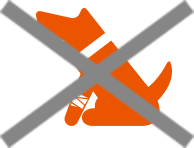
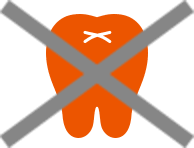
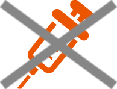
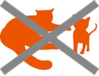

- ・初年度契約の保険開始日より前に被っていた病気またはケガ
- ・初年度契約の保険開始日より前に獣医師により発見されていた先天性異常
- ・初年度契約の保険開始日から30日以内に被った病気 など
保険金をお支払いできない主な場合 ｜ au損保
保険金をお支払いできない主な場合
次のいずれかの事由によって生じた補償の対象となる愛犬・愛猫の治療費用に関しては、
保険金をお支払いすることはできません。詳しくはご契約のしおり（普通保険約款・特約集）をご確認ください。
-

加入前からの病気・ケガ
-

歯科治療
-

ワクチン接種
健康診断 -

不妊、避妊
妊娠、出産
| 既往症、先天性異常等 |
|
| ワクチン等により予防できる病気 |
|
| 特定の病気 |
|
| 予防に関する費用 |
|
| 治療費以外の費用 |
|
| 健康食品・医薬部外品等 |
|
| 飼い主の行為 |
|
| 自然災害 |
|
| その他保険金をお支払いできない ものとして弊社が定める費用 |
|
既往症、先天性異常等
ワクチン等により予防できる病気
- ・狂犬病等のワクチン等により予防ができる病気
（その病気の発病がその予防措置の期間内であった場合を除く）
特定の病気
- ・猫伝染性腹膜炎、猫後天性免疫不全症候群（FIV）
予防に関する費用
- ・ワクチン接種費用
- ・疾病予防のための検査または投薬、予防接種費用および定期健診、予防的検査費用
- ・ノミおよびマダニの除去費用 など
治療費以外の費用
- ・シャンプー、薬用シャンプー、医薬品シャンプーおよびイヤークリーナー
- ・往診費用、対診費用および夜間休日診療費用
- ・ペットの移送費
- ・マイクロチップの挿入費用
- ・安楽死のための費用
- ・葬儀費および埋葬費等ペットの死後に要した費用
- ・相談料および指導料ならびにカウンセリングおよびセカンドオピニオンのための費用
- ・動物病院へ行かずに薬剤のみ配達される場合の配達料およびこれらと同種の費用
- ・各種証明書類の作成費用および郵送費 など
健康食品・医薬部外品等
- ・入院中の食餌に該当しない食物および療法食
- ・獣医師が処方する医薬品以外のもの
- ・漢方、温泉療法、酸素療法、免疫療法等 など
飼い主の行為
- ・故意または重大な過失
- ・給餌または給水等基本的な管理を怠ったこと
- ・精神障害、心神喪失または酒に酔った状態により正常な判断ができないおそれのある状態における行為 など
自然災害
- ・地震もしくは噴火またはこれらによる津波
その他保険金をお支払いできない
ものとして弊社が定める費用
- ・妊娠、出産、帝王切開、人工流産等の繁殖に関する費用
- ・不妊、避妊に関する費用
- ・乳歯遺残、停留睾（こう）丸、臍（さい）ヘルニア、鼠（そ）径ヘルニアおよび睫（しょう）毛乱生の処置費用
- ・爪の切除、爪切、肛（こう）門腺除去および肛（こう）門腺搾りに関する費用
- ・断耳、断尾、声帯除去および美容整形等に関する費用
- ・歯科治療および歯石除去に関する費用 など
A15C310936[1602]